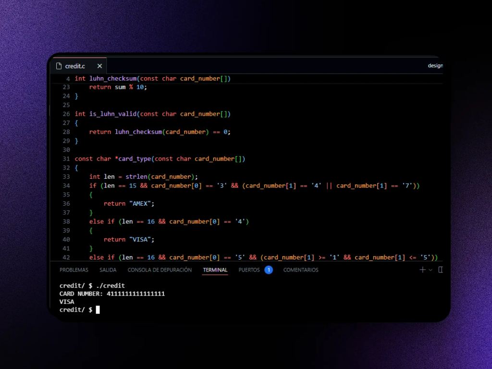
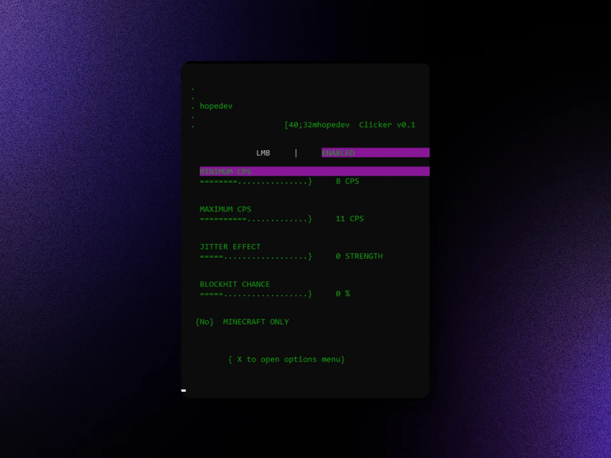

const discipline = true;
while (discipline) { execute_backend_code(); }
// Software Engineer. Designing scalable backend systems with precision and reliability.
// Perfil Profesional
Ingeniero de Software con sólida formación en desarrollo backend y gestión de sistemas IT. Especialista en la creación de soluciones escalables con Python, FastAPI y PostgreSQL.
Experiencia comprobada en la digitalización de procesos deportivos y soporte técnico crítico. Bilingüe (C1/C2) con un enfoque riguroso en la resolución de problemas y la optimización de infraestructura, orientado a resultados concretos y de alto impacto.
// Certificaciones FreeCodeCamp
Construcción de servidores de producción con Node.js y Express, diseño de APIs RESTful robustas con autenticación JWT, y conexión a bases de datos relacionales con MySQL. Desarrollé 5 proyectos de certificación end-to-end, incluyendo un microservicio de acortamiento de URLs y una API de ejercicios con historial de usuarios.
Dominio de las bibliotecas líderes del ecosistema frontend: Bootstrap para sistemas de diseño rápidos, Sass para arquitecturas CSS escalables y mantenibles, y los fundamentos de React y Redux para gestión de estado reactivo. Proyectos de certificación incluyeron una máquina de frases aleatoria, una calculadora funcional y un reloj Pomodoro.
Fundamentos sólidos en HTML5 semántico y CSS3 avanzado: Flexbox, CSS Grid, media queries y principios de accesibilidad (a11y). Diseño de interfaces que se adaptan fluidamente a cualquier dispositivo. 5 proyectos de certificación construidos from scratch, incluyendo una página de documentación técnica y un landing page responsivo.
// Herramientas & Tecnologías
// Proyectos & Experiencia Laboral
Desarrollo de un sistema de gestión y visualización de puntuaciones para eventos deportivos universitarios y regionales. Implementación exitosa en federaciones.
Diseño de una API RESTful para gestión de torneos de artes marciales. Contenedores Docker para despliegue consistente y CI/CD simplificado.
Microservicio escalable para procesamiento de tareas en segundo plano. Optimización de colas de mensajes para manejo eficiente de datos.
// Open Source · Construido desde cero

Implementación en C puro del algoritmo de Luhn para validar y clasificar tarjetas de crédito (VISA, AMEX, Mastercard). Desarrollado como proyecto de certificación de CS50x de Harvard. El programa valida el checksum matemático de cualquier número de tarjeta e identifica su emisor con O(n) de complejidad.

Autoclicker indetectable en Bash para Lunar Client y cualquier launcher de Minecraft. Interfaz TUI interactiva con control de CPS min/max, jitter effect para humanización del click, y randomización de timing para evadir sistemas anti-cheat. Configuración en tiempo real sin reiniciar el proceso.
Disponible para roles como Junior/Entry-Level Backend Developer en remoto.
ENVIAR MENSAJE